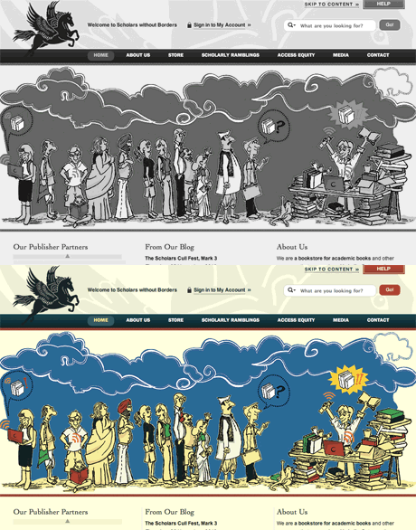
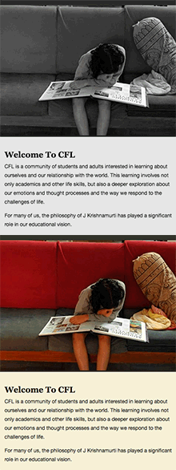
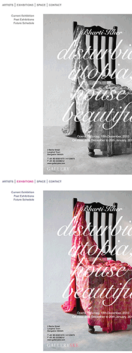
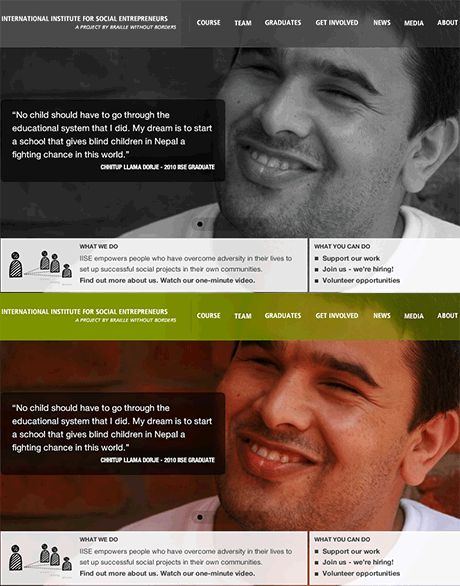
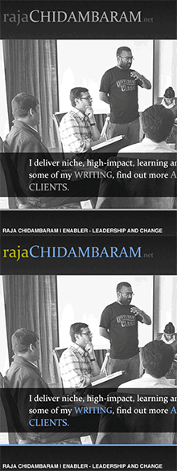
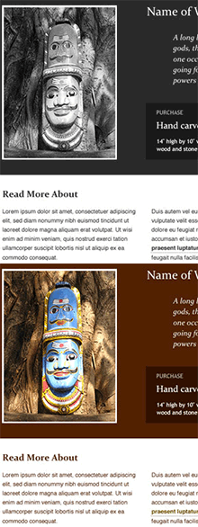

-
Scholars without Borders
 -
Centre for Learning
 -
New Trade Union Initiative
-
GallerySKE
 -
IISE
 -
Raja Chidambaram
 -
Folklore India

Who's Who?

Pixelogue was started in 2005 by Rahul Gonsalves to help organisations and small businesses develop coherent online identities and better engage with a wider public.
Rahul has been building sites that have ranged in size and complexity from small portfolio websites to larger dynamic sites managed by multiple authors.
He has been exploring the emerging area of electronic accessibility: making electronic systems and information accessible to people with disabilities. He has presented several papers on the subject, advised the Ministry of IT and Communication, C-DAC, NIXI and private sector organisations like Wipro, Infosys and IBM on the adoption of electronic accessibility standards and has been involved in the disability sector over the last five years.
As a member of the Core Group on Information Technology and Communications at the National Centre for the Promotion of Employment of Disabled Persons (NCPEDP), Rahul has been involved in the drafting of the National Policy on Electronic Accessibility for the Ministry of Information and Communications Technology. Most recently, he has helped develop policy that will enable the Government of India to adopt the Web Content Accessibility Guidelines, which are a set of web standards that ensure that everyone, regardless of physical ability, is able to access the Internet.